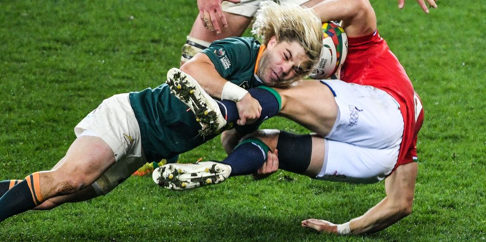
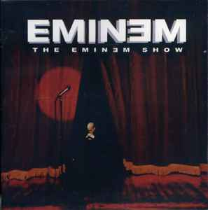

Aficiones
Me encanta el rugby, el senderismo y leer sobre mitologías.
Música Favorita
Mi grupo favorito es Imagine Dragons. También disfruto de la música urbana, sobre todo Eminem.
Cine Favorito
Me apasiona el cine, suelo ir una vez por semana. Mi película favorita es El Señor de los Anillos: El Retorno del Rey.